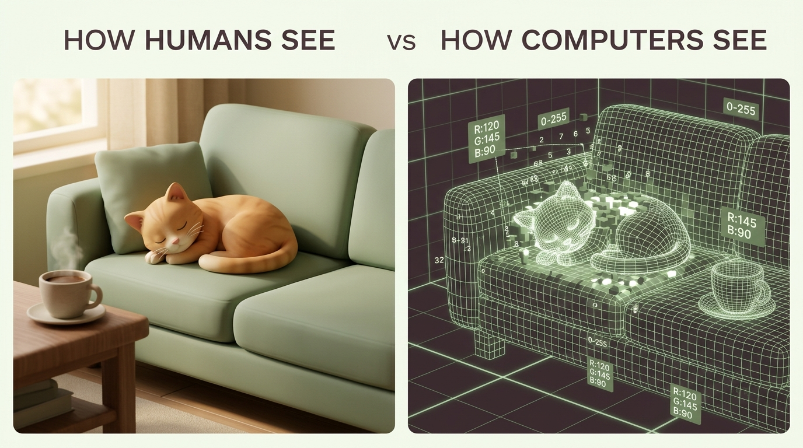
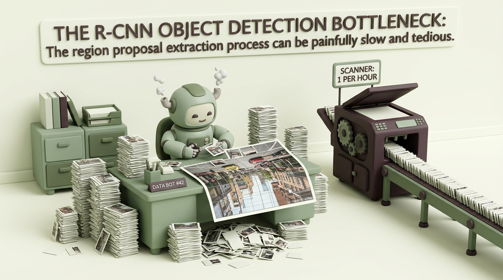
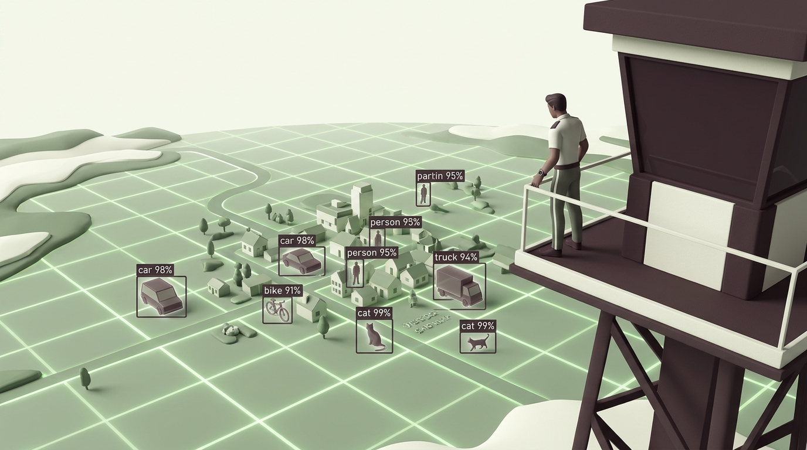
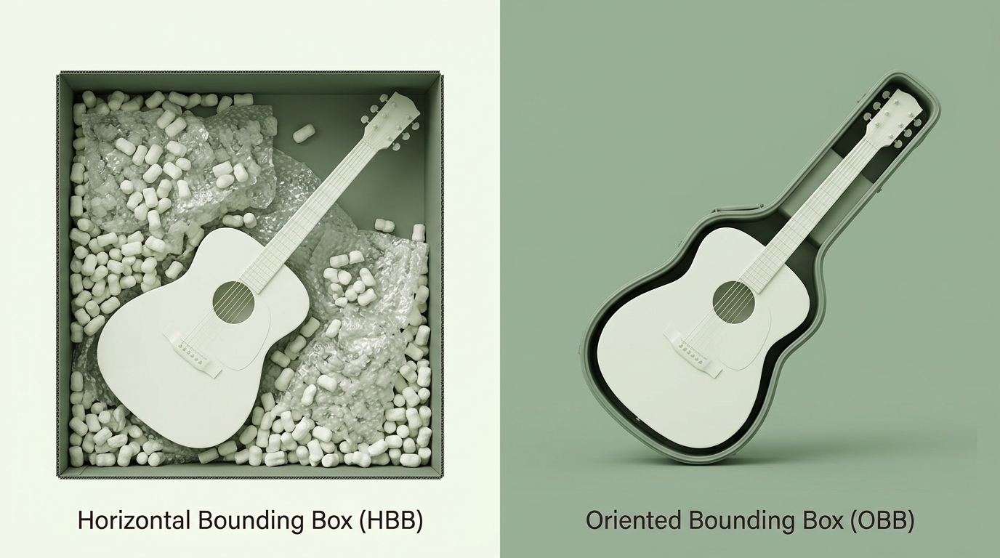

物件偵測 · 教學簡報
讓電腦學會「看」世界：
物件偵測技術演進
從候選區域的反覆計算，到端到端即時預測；再從水平框走向旋轉框。這 20 頁帶你看懂物件偵測的核心問題、架構選擇與評估方式。
WHAT?WHERE?HOW WELL?
OBJECT
DETECTION
DETECTION
WHAT + WHERE
任務
同時回答「是什麼」與「在哪裡」。
HOW
演進
從 Two-stage 到 One-stage，理解設計取捨。
HOW WELL
評估與應用
用 IoU、mAP 與 OBB 看懂模型表現。
01 基礎→02 Two-stage→03 One-stage→04 評估→05 OBB
知識來源：本專案五篇核心文章與論文
第 01 / 20 頁
第一章 · 認識任務
人類看見物體，電腦讀取像素

人類：理解畫面
我們能直接說出「畫面裡有什麼」，也能理解物體彼此的位置。
241102352409932184290.........
電腦：接收像素數值
彩色影像可表示為 H × W × 3 的 RGB 數值陣列。模型從像素模式學習邊緣、紋理與形狀。
像素→視覺特徵→物體概念→位置與類別
關鍵問題： 如何把大量像素數字，轉換成可辨識的物體類別與空間位置？
IBM Think：What is Object Detection? · raw/articles/01-ibm-what-is-object-detection.md
第 02 / 20 頁
第一章 · 任務定義
分類、定位、偵測與分割有什麼不同？
同一張街景照片，可以提出四種不同問題。差別在於：模型需要回答多少資訊？
01｜影像分類
整張圖是什麼？
輸出：「街景」一個標籤。
輸出：「街景」一個標籤。
02｜物件定位
主要物體在哪裡？
輸出：一個主體的框。
輸出：一個主體的框。
03｜物件偵測
有哪些物體、各在哪裡？
輸出：多個類別與邊界框。
輸出：多個類別與邊界框。
04｜影像分割
每個物體佔據哪些像素？
輸出：像素級輪廓。
輸出：像素級輪廓。
本簡報主角： 物件偵測。它需要同時處理多個物體的分類與定位。
IBM Think：What is Object Detection? · 任務定義與電腦視覺任務比較
第 03 / 20 頁
第一章 · 核心任務
物件偵測的兩個核心：分類 + 定位
輸入影像一張 RGB 圖片
→
分類 Classification判斷物體類別
→
定位 Localization預測邊界框
→
偵測結果類別 + 座標 + 信心度
一張圖，多個物體每個框都需要對應類別與位置
記住： 分類回答「是什麼」；定位回答「在哪裡」；物件偵測要同時完成兩者。
IBM Think：Object Detection 的定義與輸出
第 04 / 20 頁
第一章 · 通用架構
一張圖片如何變成偵測結果？
Image原始影像
→
Backbone提取特徵
→
Neck融合尺度
→
Head預測類別與框
→
Output偵測結果
Backbone｜特徵提取
由像素中提取由淺到深的特徵，例如邊緣、紋理與形狀。
Neck｜特徵融合
整合不同解析度的特徵，讓模型兼顧大物體與小物體。
Head｜預測
輸出類別分數與邊界框座標。
閱讀提示： 這是理解現代偵測器的通用模組視角；不同模型不一定都以相同形式具備三個獨立模組。
IBM Think：Modern Object Detection Pipeline
第 05 / 20 頁
第二章 · 兩種架構路線
Two-stage 與 One-stage：兩種解題思路
TWO-STAGE｜先提案，再辨識
候選區域找可能有物體的位置
→
分類與修框逐區域辨識
代表：R-CNN 家族
將「找區域」與「辨識區域」分成兩個階段。ONE-STAGE｜一次預測
整張影像一次送入網路
→
密集預測直接輸出類別與框
代表：YOLOv1
不先建立獨立候選區域階段，直接預測偵測結果。這不是新舊排名： 而是兩種不同的設計路線。後面會分別看它們如何處理速度與定位問題。
IBM Think；Lilian Weng：R-CNN Family；Redmon et al., YOLOv1
第 06 / 20 頁
第二章 · R-CNN 家族
R-CNN：先找出約 2,000 個候選區域

R-CNN：逐張「剪貼」辨識
Selective Search 先提出約 2,000 個候選區域，每個區域再獨立送進 CNN。
~2,000
候選區域 / 張影像
Selective Search↓裁切與 Warping↓每個 RoI 各跑一次 CNN↓SVM 分類 + 框迴歸
主要瓶頸： 同一張圖的重疊區域反覆執行 CNN，運算與訓練流程都很繁重。
Girshick et al., CVPR 2014；Lilian Weng, R-CNN Family
第 07 / 20 頁
第二章 · Fast R-CNN
Fast R-CNN：整張圖片只抽取一次特徵
R-CNN
重複抽特徵
RoI 1RoI 2RoI 3…
CNN × N
每個候選框都重跑 CNN→
Fast R-CNN
共享特徵圖
Feature Map
RoI Pooling
整張圖只抽取一次特徵RoI Pooling
把不同大小的候選區域映射到共享特徵圖，再轉成固定大小。
多任務輸出
同一個網路同時預測類別分數與邊界框偏移量。
改善了什麼？ 減少 CNN 重複運算；但候選框仍由 Selective Search 產生，這個前處理仍是速度瓶頸。
Girshick, ICCV 2015；Lilian Weng：R-CNN Family
第 08 / 20 頁
第二章 · Faster R-CNN
Faster R-CNN：讓網路自己提出候選框
共享特徵圖Backbone
→
RPN預測候選區域
→
RoI 特徵對候選框取特徵
→
Detection Head分類與修框
Anchor Boxes
在特徵圖位置上放置不同尺度、長寬比的參考框，再學習前景分數與座標偏移。
RPN 的角色
把候選區域生成也交給神經網路學習。
關鍵突破
RPN 與偵測網路共享卷積特徵，不再依賴獨立的 Selective Search。
演進關係： Fast R-CNN 解決「特徵重複計算」；Faster R-CNN 接著解決「候選框生成太慢」。
Ren et al., NIPS 2015；Lilian Weng：R-CNN Family
第 09 / 20 頁
第二章 · 架構延伸
Mask R-CNN：從畫框進一步到像素分割
偵測：Bounding Box
用矩形框標示物體的大致位置。
實例分割：Mask
進一步預測物體的像素級遮罩。
Faster R-CNN+RoIAlign+Mask Branch→Mask R-CNN
RoIAlign
保留連續座標，透過雙線性插值取得特徵，減少 RoI Pooling 的量化偏移。
Mask Branch
在分類與框迴歸之外，增加一個分支預測每個 RoI 的物體遮罩。
為什麼放在這裡？ Mask R-CNN 展示 R-CNN 架構可以從「框出物體」延伸到「描繪物體輪廓」。
He et al., ICCV 2017；Lilian Weng：R-CNN Family
第 10 / 20 頁
第三章 · One-stage 動機
為什麼研究者開始追求「一次完成」？
Two-stage 的流程
先產生候選區域
再對候選區域做分類與定位修正。
Proposal→Classification→Refinement
YOLO 的想法
把偵測視為單一迴歸問題
直接從整張影像預測框座標與類別機率。
Image→One Network→Detections
對即時影像來說，減少階段與重複運算很有吸引力。YOLO 的核心主張，就是一次看完整張圖並直接輸出結果。
轉折： 研究問題從「如何更快地產生候選框？」轉向「能不能不經過獨立候選框階段？」
Redmon et al., CVPR 2016：You Only Look Once
第 11 / 20 頁
第三章 · YOLOv1 核心機制
YOLOv1：把整張圖片交給 7 × 7 網格

YOLOv1 將輸入影像劃分為 S × S 網格。
7 × 7
共 49 個網格
物體中心落在哪一格↓該格負責預測該物體↓輸出框與類別機率
45 FPS標準 YOLO
155 FPSFast YOLO
重點：網格不是把圖片切成 49 張小圖，而是把預測責任分配到不同空間位置。
Redmon et al., CVPR 2016；arXiv:1506.02640
第 12 / 20 頁
第三章 · YOLOv1 輸出
YOLOv1 的輸出：每格預測哪些資訊？
S × S × (B × 5 + C)
7 × 7 × (2 × 5 + 20) = 7 × 7 × 30
每個框的 5 個值
x、y：中心位置
w、h：寬與高
Confidence：物體存在與框品質的綜合分數。
w、h：寬與高
Confidence：物體存在與框品質的綜合分數。
每格 2 個框
B = 2。每個框都預測位置與 Confidence。
每格 20 類機率
C = 20（PASCAL VOC）。表示有物體時，各類別的條件機率。
49 個網格×每格 30 個數值→1470 個輸出值
容易混淆： 每個網格輸出 20 個類別條件機率；每個網格最多預測兩個框。YOLOv1 的設計對同一網格內多個物體有空間限制。
Redmon et al., CVPR 2016：Network Design / Predictions
第 13 / 20 頁
第三章 · 優勢與限制
YOLOv1 很快，但速度不代表沒有代價
速度表現（論文報告）
45FPS · YOLO
155FPS · Fast YOLO
論文報告標準 YOLO 與 Fast YOLO 的即時偵測速度。
VOC 2007 錯誤分析
Fast R-CNN 13.6%YOLO 4.75%
Fast R-CNN 8.6%YOLO 19.0%
YOLO 的優勢
全圖上下文有助減少背景誤檢；單次預測適合即時應用。
YOLOv1 的限制
網格責任與粗粒度特徵，使密集小物體較難偵測。
定位取捨
論文錯誤分析中，YOLO 的定位錯誤比例較高。
公平比較提醒： 45 FPS 是論文報告的標準 YOLO 速度；背景與定位錯誤數字來自 VOC 2007 錯誤分析。這些指標描述不同面向，不應混為單一排名。
Redmon et al., CVPR 2016：Table 1、Section 4.2
第 14 / 20 頁
第四章 · 評估指標
IoU：預測框與真實框有多接近？
交集
IoU =交集面積/聯集面積
IoU = 1.0
兩個框完全重疊。
IoU = 0.5
重疊程度達到常見的 VOC 評估門檻。
IoU = 0.0
兩個框完全沒有交集。
直覺理解： IoU 越高，預測框與真實框的重疊程度越高；但是否算命中，仍要看評估設定的門檻。
Roboflow：What is Mean Average Precision in Object Detection?
第 15 / 20 頁
第四章 · 錯誤類型
TP、FP、FN：模型到底錯在哪裡？
TP真陽性類別正確，且 IoU 達到門檻。
FP偽陽性誤報、類別錯誤、定位不合格或重複框。
FN偽陰性真實物體沒有被成功偵測。
車0.920.840.72
NMS
車0.92
同一個物體周圍有多個高度重疊預測框時，NMS 保留高分框、抑制重複框。
注意： 在固定類別與 IoU 門檻下，評估配對通常只允許一個真實物體對應一個 TP；重複預測會被計為 FP。
Roboflow mAP Guide；本專案 wiki/benchmarks/iou.md、concepts/postprocessing/nms.md
第 16 / 20 頁
第四章 · 評估指標
Precision、Recall、AP 與 mAP 如何串起來？
PrecisionTP / (TP + FP)預測出來的框，有多少是真的？
RecallTP / (TP + FN)真實存在的物體，有多少被找到？
P-R Curve改變 Confidence Threshold，觀察 Precision 與 Recall 的變化。
AP｜Average Precision
單一類別的 Precision–Recall 曲線下面積。
mAP｜Mean Average Precision
把各類別的 AP 取平均，得到整體指標。
| 指標 | IoU 門檻 | 重點 |
|---|---|---|
| mAP@50 | 0.50 | 較寬鬆的定位要求 |
| mAP@50:95 | 0.50–0.95，步長 0.05 | 平均多個門檻，要求更嚴格 |
一句話記憶： Precision 看誤報，Recall 看漏檢，AP 看單一類別整體表現，mAP 再對類別取平均。
Roboflow：mAP Guide；本專案 wiki/benchmarks/map.md
第 17 / 20 頁
第五章 · 進階應用
為什麼水平框不一定適合所有物體？

傾斜或細長物體
例如航拍船隻、飛機、傾斜文字與工業零件。
HBB
OBB
HBB 與 OBB
HBB 只能水平、垂直對齊；OBB 可以隨物體方向旋轉。
HBB｜水平邊界框
由中心座標與寬高描述，不包含角度。
OBB｜旋轉邊界框
增加角度資訊，讓框更貼近斜向物體的幾何方向。
為什麼需要 OBB？ 當物體傾斜或密集排列時，水平框可能包進大量背景，彼此也可能高度重疊。
Ultralytics：Oriented Bounding Box Detection · raw/articles/05-ultralytics-obb-guide.md
第 18 / 20 頁
第五章 · OBB 機制
OBB：旋轉框、Rotated IoU 與 Rotated NMS
OBB 表示(x, y, w, h, r)中心、寬、高、旋轉角度
Rotated IoU旋轉框交集 ÷ 聯集計算兩個旋轉矩形實際重疊程度
Rotated NMS旋轉框去重以 Rotated IoU 判斷是否抑制重複框
角度有週期性矩形旋轉 180° 後，幾何形狀會重合。
幾何重疊要重新計算斜向矩形的交集不再只是軸對齊矩形交集。
資料表示：常見五參數形式為 xywhr；也可使用四個頂點座標表示旋轉矩形。Ultralytics 文件另說明其角度範圍與邊界處理方式。
Ultralytics OBB Guide；本專案 wiki/applications/obb.md、concepts/postprocessing/rotated-nms.md
第 19 / 20 頁
總結 · Graph 知識全景
五篇文章如何串成一條知識主線？
物件偵測
分類 + 定位
分類 + 定位
Two-stageR-CNN → Fast → Faster候選區域逐步交給網路處理
One-stageYOLOv1整張影像直接預測
↓
評估層IoU → TP / FP / FN → Precision / Recall → AP / mAP
↓
幾何擴展HBB → OBB → Rotated IoU → Rotated NMS
IBM Think
任務定義、電腦視覺層次與通用架構。
Lilian Weng
R-CNN、Fast R-CNN、Faster R-CNN 與 Mask R-CNN 的演進。
YOLOv1 論文
單階段偵測、網格輸出、速度與錯誤分析。
Roboflow
IoU、Precision、Recall、AP 與 mAP。
Ultralytics
OBB 表示、旋轉框評估與後處理。
技術演進不是只追求更快或更準，而是依照任務需求，在速度、定位品質、幾何表示與計算成本之間做選擇。
五篇核心來源：IBM · Lilian Weng · YOLOv1 · Roboflow · Ultralytics
第 20 / 20 頁